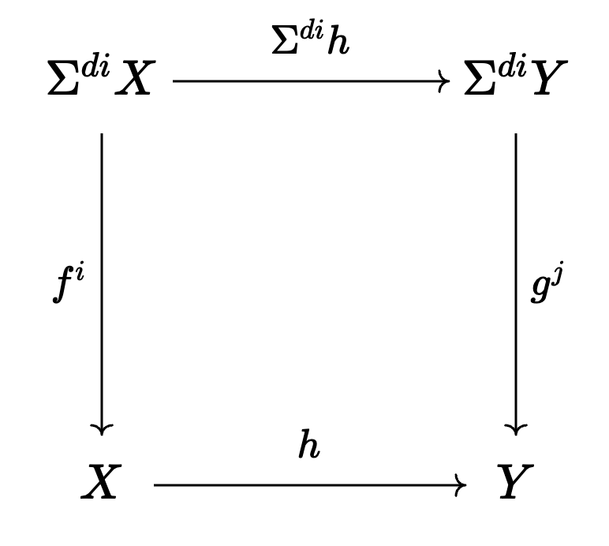

Chapter 1
From what I can tell, the motivating problem for the development of the tools discussed in the Orange Book is trying to understand the structure of \(\pi_*^S\), the stable homotopy groups of spheres. If we look at it like a ring, we can’t describe it in terms of generators and relations, particularly because all elements in degree \(\geq 1\) are nilpotent due to a theorem of Nishida. Thus, we have to view \(\pi_*^S\) from a different perspective. Despite each element having finite order, we can identify certain infinite families of elements in the stable stems, which we will touch on later. These infinite families are called periodic, and with this new point of view, we’d like to know whether all elements of the stable stems are a part of some periodic family, which would indeed give us a great deal of information about the global structure of stable homotopy groups.
There are two main theorems in this book: the nilpotence theorem and the periodicity theorem. The latter is more geared toward this global structure of homotopy groups as just discussed, and the former theorem implicates a certain (co)homology theory \(MU\), complex bordism theory, which will become central to studying the homotopy category of CW complexes/spectra. In this post I will document the necessary terms and definitions to be able to state these two results, while trying to weave in some sort of narrative to clarify things for myself. For now I will keep things (as the book does for the first few chapters) in terms of spaces, then transition to spectra. Perhaps I will revise this to make everything consistent, but we’ll see.
Nilpotence theorem
We begin with a definition.
Definition 1 Suppose we have a map \(f:\Sigma^d X \xrightarrow{f} X\), where \(d\geq 0\). We may iterate it (appropriately suspending) by considering the composites \[ \cdots \Sigma^{3d} X \xrightarrow{\Sigma^{2d}f} \Sigma^{2d} X \xrightarrow{\Sigma^d f} \Sigma^d X \xrightarrow{f} X \] We denote these composites by \(f,f^2,f^3\), etc. For such a self-map \(f\), we say that it is nilpotent if some suspension of \(f^t\) for some \(t>0\) is nullhomotopic. Otherwise, \(f\) is periodic.
Recall that a homology theory \(E\) is a functor from the homotopy category of based spaces to the category of graded abelian groups. By functoriality, we always have the unique homomorphism \[ E_*(X)\xrightarrow{\epsilon} E_*(\text{pt}) \] Taking the kernel of this map gives us the reduced homology of \(X\), denoted by \(\overline{E}_*(X)\). For ordinary homology, this is simply removing a \(G\) summand of \(H_0(X;G)\).
Coming back to the above definition, by functoriality of homology theories and the suspension isomorphism, if we have a reduced homology theory \(\overline{E}_*\) and apply it to the map \(f\), we will obtain an endomorphism of \(\overline{E}_*(X)\) raising the grading by \(d\). We may now state the nilpotence theorem.
Theorem 1 There is a homology theory \(MU_*\) such that a self-map \(f\) of a finite CW complex is stably nilpotent if and only if some iterate of \(\overline{MU}_*(f)\) is trivial.
Essentially, nilpotence is detected by the homology theory \(MU_*\). Compared to ordinary homology, \(MU_*\) is quite interesting. For one, it takes values in the category of modules over a certain graded ring \(L\), called the Lazard ring, which is isomorphic to \(MU_*(\text{pt})\). Additionally, these modules also have an interesting action by a certain group \(\Gamma\), adding even more algebraic structure to the picture. We will discuss this homology theory and these other algebraic gadgets in more depth later.
Periodicity Theorem
We now pivot to the periodicity theorem and its setup. We will employ the use of another extraordinary homology theory called Morava K-theory, but first we need to discuss localization at the prime \(p\).
Let’s take the ring \(\ZZ\) and consider the set \(S\coloneqq \ZZ/(p)\), the elements of \(\ZZ\) that lie outside of the prime ideal \((p)\) (i.e. \(S\) consists of all integers not divisible by \(p\)). Now, consider the set \[ \ZZ_{(p)}\coloneqq \{\frac{a}{b} : a\in\ZZ, b\in S \} \] This is in fact a ring, with the property that it has a unique maximal ideal \(\mathfrak{m}=p\ZZ_{(p)}\). Such a ring is called a local ring. Now, if we want to apply this to a \(\ZZ\)-module \(M\), we keep \(S\) the same, and we again let \(M_{(p)}\) consist of formal fractions in \(M\) with denominators in \(S\). However, we declare two fractions \(\frac{m_1}{s_1},\frac{m_2}{s_2}\) to be equal if there exists an element \(t\in M\) such that \(t(s_2m_1-s_1m_2)=0\) in \(M\). The reason for this equivalence relation is to account for the torsion of \(M\). Another, much more straightforward of constructing \(M_{(p)}\) is to simply tensor it with \(\ZZ_{(p)}\). In practice this is what we will mean when we discuss localization in the future, just tensor everything with \(\ZZ_{(p)}\) and proceed.
We now return to homotopy. One can perform an analogous procedure for spaces, but it is a little technical so I won’t go through the construction here. The point is, for any CW complex \(X\), there is a unique \(X_{(p)}\) such that for any homology theory \(E_*\), we have \(\overline{E}_*(X_{(p)})\cong \overline{E}_*(X)\otimes \ZZ_{(p)}\). As one would expect, \(X_{(p)}\) is called the \(p\)-localization of \(X\), and if \(X\) is finite, we say \(X_{(p)}\) is a \(p\)-local finite complex. Some key properties of this construction are listed below.
Suppose \(X\) is a simply-connected CW complex such that \(\overline{H}_*(X)\) consists entirely of torsion.
- If this torsion is prime to \(p\), then \(X_{(p)}\) is contractible.
- If it is all \(p\)-torsion, then \(X\) is \(p\)-local, i.e., \(X_{(p)}\) is equivalent to \(X\).
- In general \(X\) is homotopy equivalent to the wedge sum of its \(p\)-localizations for all the primes \(p\) in this torsion.
From the definition of \(p\)-localization, we have the following chain of equalities/isomorphisms for a finite simply-connected CW complex \(X\): \[ \overline{H}_*(X)\cong \bigoplus_p(\overline{H}_*(X)\otimes \ZZp) = \bigoplus_p \overline{H}_*(X_{(p)})=\overline{H}_* \bigl( \bigvee_p X_{(p)}\bigr) \] For Whitehead’s theorem to apply, we need a map that carries this isomorphism of reduced homology to obtain a homotopy equivalence, and fortunately we do have such a map coming from the natural map that arises out of localization from \(X\) to \(X_{(p)}\).
Now, if we consider the smash product \(\overline{H}_*(X \wedge Y)\) the Künneth formula tells us this is isomorphic to \(\overline{H}_*(X)\otimes \overline{H}_*(Y)\). If \(X=X_{(p)}\) and \(Y=X_{(q)}\) for distinct primes \(p,q\), then this tensor product will clearly be trivial and thus so will \(X_{(p)}\wedge X_{(q)}\). Furthermore, this implies that the cartesian product of two coprime localizations is the same as their wedge sum.
The reason we introduced the concept of \(p\)-localizations and \(p\)-local spaces is due to the fact that we can form many interesting self-maps using these spaces. However, in this case \(MU_*\) is not the homology theory that we will utilize. Instead, we will use Morava K-theory. Its basic properties are as follows:
For each prime \(p\) there is a sequence of homology theories \(K(n)_*\) for \(n\geq 0\) with the following properties:
- \(K(0)_*(X)=H_*(X;\QQ)\) and \(\overline{K(0)}_*(X)=0\) when \(\overline{H}_*(X)\) is all torsion.
- \(K(1)_*(X)\) is one of \(p-1\) isomorphic summands of mod \(p\) complex K-theory.
- \(K(0)_*(\text{pt})=\QQ\) and for \(n>0\), \(K(n)_*(\pt)=\ZZ/p [v_n,v_n^{-1}]\), where \(|v_n|=2(p^n-1)\). It turns out that this ring is a graded field in the sense that every module over it is free. Furthermore, \(K(n)_*(X)\) is a \(K(n)_*(\pt)\)-module.
- There is a Künneth isomorphism \[ K(n)_*(X\times Y)\cong K(n)_*(X)\otimes_{K(n)_*(\pt)} K(n)_*(Y) \]
- Let \(X\) be a \(p\)-local finite CW complex. If \(\overline{K(n)}_*(X)\) vanishes, then so does \(\overline{K(n-1)}_*(X)\).
- If \(X\) is as above, then \[ \overline{K(n)}_*(X)=K(n)_*(\pt)\otimes \overline{H}_*(X;\ZZ/p) \] for \(n\) sufficiently large. In other words, \(\overline{K(n)}_*(X)\) is nontrivial if \(X\) is simply connected and not contractible.
We need one last definition to state the periodicity theorem.
Definition 2 A \(p\)-local finite complex \(X\) has type \(n\) if \(n\) is the smallest integer such that \(K(n)_*(X)\) is nontrivial. If \(X\) is contractible, then \(X\) has type \(\infty\).
Theorem 2 Let \(X\) and \(Y\) be \(p\)-local finite CW complexes of type \(n\) where \(n<\infty\).
- There is a self map \(f:\Sig^{d+i}\longrightarrow \Sig^i X\) for some \(i\geq 0\) such that \(K(n)_*(f)\) is an isomorphism and \(K(m)_*(f)\) is trivial for \(m>n\). We will call such a map \(f\) a \(v_n\)-map. When \(n=0\) then \(d=0\). When \(n>0\), \(d\) is a multiple of \(2(p^n-1)\).
- Suppose \(h:X\longrightarrow\) is a continuous map and assume both spaces have been suspended sufficiently to be the target of a \(v_n\)-map. Let \(g:\Sig^e Y \longrightarrow Y\) be a self-map as above. Then there are positive integers \(i\) and \(j\) with \(di=ej\) such that the following diagram commutes up to homotopy.

Moreover, \(i\) and \(j\) can be chosen independently of \(h\).
As we can see, if we want to understand periodic self-maps, we better understand Morava K-theories. We note that it isn’t logically necessary for \(X\) to have type \(n\), but it just happens to be the only interesting case. (If the type of \(X\) is larger than \(n\), then the trivial map satisfies the theorem. If the type is smaller than \(n\), then for \(d=0\) the degree \(p\) map satisfies the theorem, and if \(d>0\), the theorem follows as \(K(m)_*(f)=K(m)_*(\pt)\otimes H_*(f)\) and some iterate of \(H_*(f)\) must be trivial reasons due to the finiteness of \(X\)). From 2. we see that \(f\) is actually unique in the sense that if we have some other periodic self-map \(g\) and take \(Y=X\) and \(h\) the identity, it shows that \(f^i\simeq g^j\) for some \(i,j\).
Thus we have stated the two main theorems of this book. Already, things are getting complicated as we are dealing with extraordinary homology theories, and there is a lot of math that we have glossed over. In the next few posts I’ll be discussing \(MU_*\) and \(K(n)_*\) in more depth. There are some very cool connections with algebra and number theory that will drive the discussion and are necessary to develop the theory.